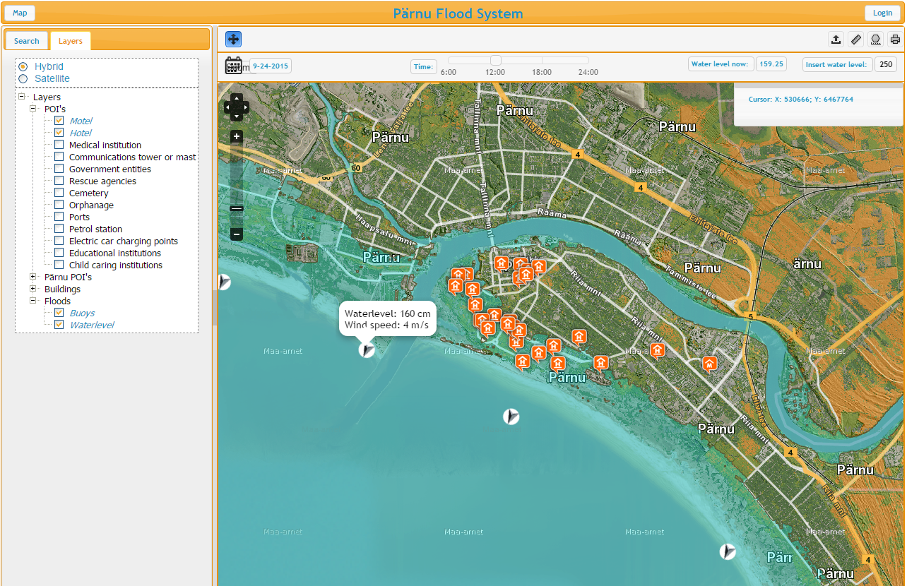
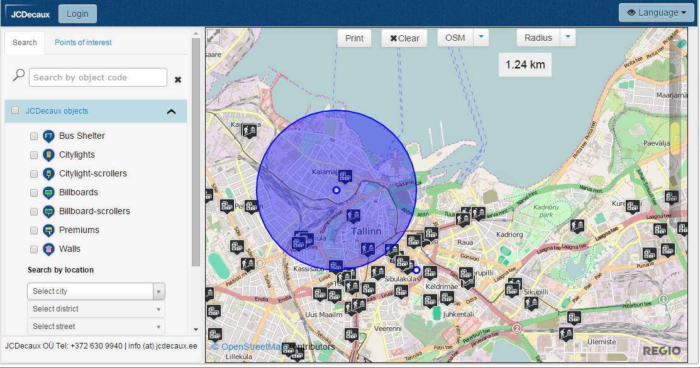
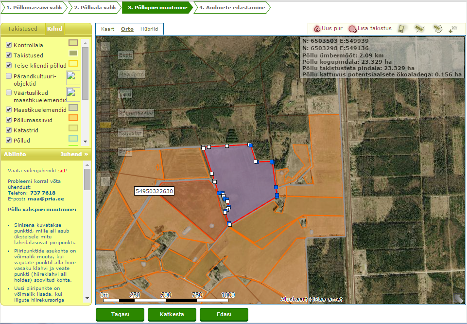
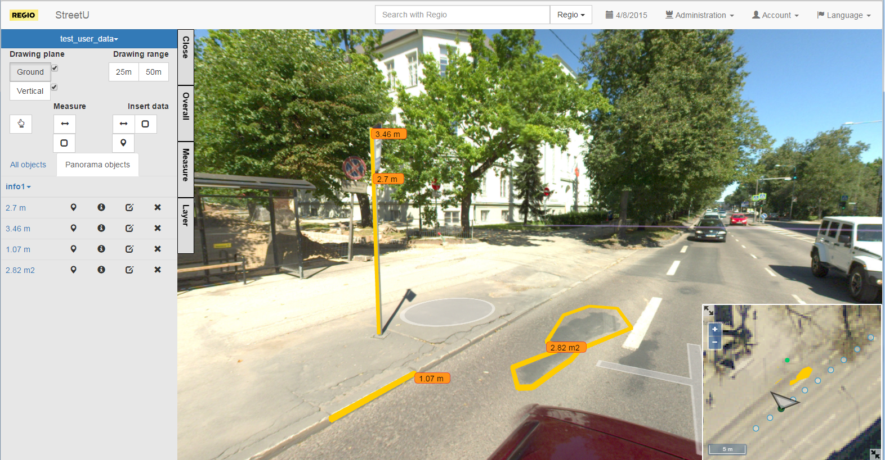

Kemo Oolep
Developer
- Estonia
- kemo.oolep@gmail.com
- +372 586 52 047
- kemooolep.com
Been involved in many different kind of projects mostly as front-end side developer but also have done backend works in PHP and JAVA. I like to try out new technologies and also to do some projects for myself, like it were SpotScore – project our team made in Garage48, it is location based information for person, who is searching place where to live by personal info, like do you drive with car or bus, do you need that bus stops will be near or not, do you like country side or urban. Fun project but unfortunately did’nt have enough time to finish it. If you like the idea then let’s meet up! I'm also intrested in C++ and embedded systems development with Arduino. I made home lighting system, easy you say? There is whole department filled with LAN cable parts which will transform signals from switches to central system, which is also connected with Android phone and central web service – now it can also switched on and off by internet. There is also possible to read another information like indoor lighting value, temperature and why not to use Methane sensor in toilet?
Sindi Gümnaasium
Highschool
Estonian Entrepreneurship University of Applied Sciences, Tartu (Estonia)
Applied Higher Education in Software development
OÜ Arvutiparandus
Support (Training)
OÜ Creative Solutions Group
Wordpress developer (Training)
AS Regio
Developer
Symfony 2, Doctrine ORM, Twig, Firephp, jQuery UI, OpenLayers 2, Bootstrap, PostgreSQL, PostGIS, SVN. Project is in demo mode accessible http://space.regio.ee/iap/web/app.php/ This project was from scratch, I did front-end and back-end. Team size: 3 developers, 1 project leader and analyst.
Symfony 2, Doctrine ORM, Composer,Twig, Bootstrap, jQuery, OpenLayers 2, Proj4js, PostgreSQL, PostGIS, SVN Project client website: http://geo.jcdecaux.ee/en/ Project from scratch. I did most of the front-end and also some back-end works. What is missing from view is administration page, which is only accessible with username. Team size: 2 developers, 1 QA, project leader and analyst
Symfony, Doctrine ORM, jQuery, ExtJS, OpenLayers 2, PostgreSQL, PostGIS, SVN Project is accessible only via PRIA website, because it is governmental project. This project was developed by Regio before I came to work there. I was involved in back-end and front-end developments. Team size: 4 developers, project leader and analyst
Android, JAVA, PHP, MySQL, JSON Application can be downloaded from play store: https://play.google.com/store/apps/details?id=tunniplaan.kemooolep.android This application was made for myself when I was studing at Tartu TradeSchool for one short course. Currently application supports 14 schools. PHP ja MySQL is used for collecting statistics and for proxy. Statistics are demo based AngularJS experiment application http://kemooolep.com/timetable/
Spring, Hibernate, JAVA, PostgreSQL, PostGIS, Geoserver, WFS, WMS, JSON, AngularJS, Bootstrap, OpenLayers 3, ThreeJS, Grunt, Bower, Yeoman In this project I was senior developer who has to lead project success. Also was involved in developming front-end with AngularJS and Bootstrap.
{kind=link}
{kind=link}
{kind=link}
{kind=link}